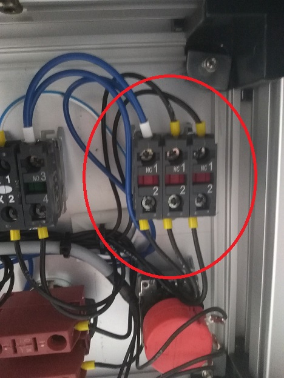
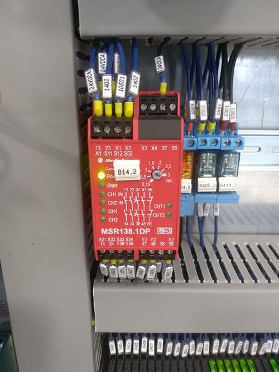
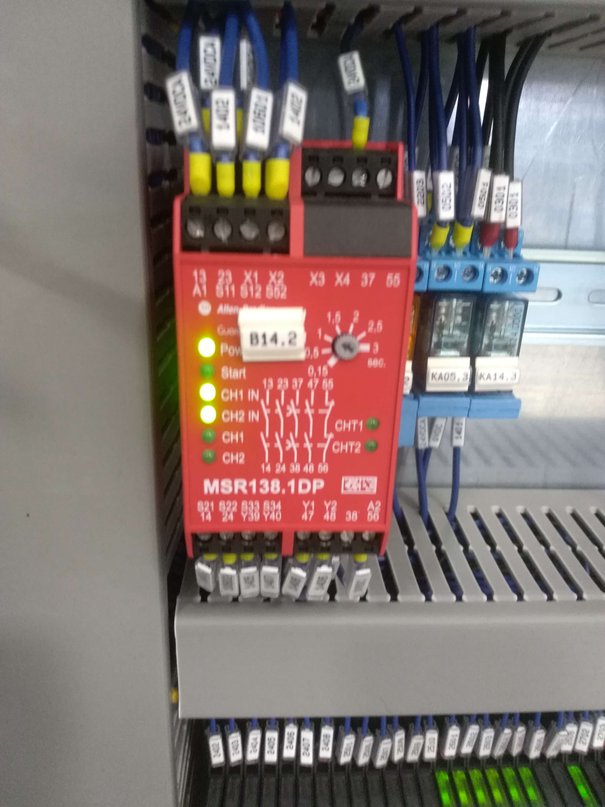

Spiegazione dell'errore
Macchina in situazione di emergenza, la lampadina rossa è lampeggiante e la macchina non si muove. Il circuito delle emergenze risulta aperto.
Possibili cause
Fungo di emergenza premuto;
Guasto del fungo di emergenza;
Guasto della centralina di sicurezza all'interno del quadro eletrrico;
Cavo multipolare collegato dalla consolle al quadro elettrico guasto;
Possibili soluzioni
Sbloccare fungo di emergenza:

Controllare il corretto funzionamento del fungo e dei contatti elettrici collegati posti al di sotto del fungo stesso (pulsantiera consolle);

Controllare il corretto funzionamento della centralina ovvero, una volta verificato che il circuito delle emergenze come da schema elettrico sia chiuso, la centralina dovrà funzionare nel seguente modo:
Con fungo di emergenza premuto (circuito delle emergenze aperto):

Con fungo di emergenza rilasciato(circuito emergenza chiuso):

Verificare la continuità tra i cavi collegati sui contatti del fungo e i rispettivi cavi collegati nella morsettiera relativa nel quadro elettrico reperire le info sullo schema;
Articoli collegati